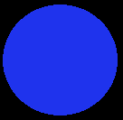
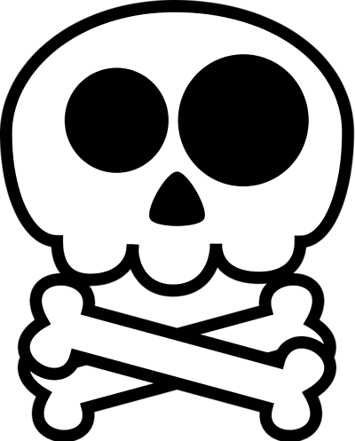
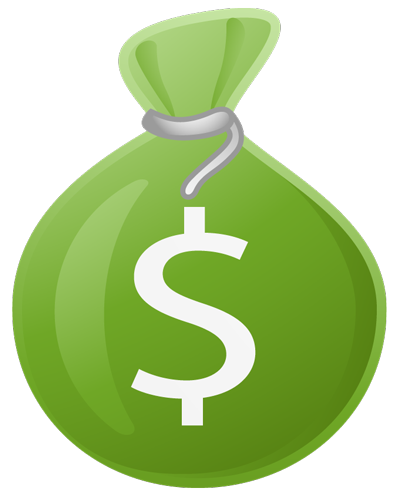

How to COLLESCAPE??
Following are the key elements you need to know before playing this game.- Master
 - Player
 - Danger
- Life
 - Money Bag
-
Rules:
* The game begins with the initial movement of MASTER from top left corner of the Arena, and the inception of PLAYER i.e., shoot(1) should happen within 10 seconds of MASTER movement. If not the game will be over with zero score.
* Once the PLAYER inception is successful, you should not allow the collision to be happenned between them. For this, utilize shoot(2) by clicking away from MASTER and the process continues till limited shoots get over.
* PLAYER speed doubles for every subsequent shoots and the shoot starts the PLAYER in the same direction how it was travelling in previous shoot.
* Danger, Life and Money bag symbols appear randomly when the game progresses.
* When Player hits danger symbol, a danger ball starts from the top left corner of arena which acts similar to Master ball. So the game gets over when the PLAYER collides with DANGER ball too.
* When Player hits life symbol, two more shoots will be added to the PLAYER.
* When Player hits Money bag symbol, the present shoot score will be calculated in 2X mode however this mode will be reset once the player starts next shoot. -
Scoring:
* The running shoot score is shown at the bottom of the page. Once another shoot is started, the previous shoot score will be added to the Shoot Score List and present shoot score starts from 0$.
* Once the game is over, best five scores will be identified from the list and total score is calculated based on them.
Following are few icons and their purpose
- Click to stop the background music.
- Click to start the background music again.